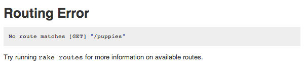

URLs & the Router
Melissa Xie
- thoughtbot
- @mxie
What's a URL?
(besides "uniform resource locator")
Here is the URL for a typical Google search:
http://www.google.com/search?q=kittens+and+puppies

Let's dissect this a little bit (the URL, not the kitten and puppy)
URLs are made up of several parts:
https://www.google.com/search?q=kittens+and+puppies
scheme
URLs are made up of several parts:
https://www.google.com/search?q=kittens+and+puppies
domain
URLs are made up of several parts:
https://www.google.com/search?q=kittens+and+puppies
path
URLs are made up of several parts:
https://www.google.com/search?q=kittens+and+puppies
query
What we care about
https://www.google.com/search?q=kittens+and+puppies
- The path and query are used by the web server to know what to do.
Rails params
- Rails turns the query parameters into a
paramshash.
# https://www.google.com/search?q=kittens+and+puppies
params[:q] # => "kittens and puppies"
So how does Rails know what to do with localhost:3000/topics?
Enter the Router: config/routes.rb
Suggestotron::Application.routes.draw do
resources :votes
resources :topics
end
Resources
resources :topics
Tells your application to provide the common paths for your Topic model.
https://www.google.com/search?q=kittens+and+puppies
Paths and their helpers
Action Path helper Links to Request
create topics_path /topics POST
show topic_path(topic) /topics/42 GET
update new_topic_path /topics/new PUT
destroy topic_path(topic) /topics/42 DELETE
- Used inside your views to tell your application where to go
topic_path(topic)goes to thetopics#showaction becauseGETis the default.topic_path(topic, :method => :delete)goes to thetopics#destroyaction.
rake routes
- Gives information on all of the paths your application knows about.
topics GET /topics(.:format) topics#index
POST /topics(.:format) topics#create
new_topic GET /topics/new(.:format) topics#new
edit_topic GET /topics/:id/edit(.:format) topics#edit
topic GET /topics/:id(.:format) topics#show
PUT /topics/:id(.:format) topics#update
DELETE /topics/:id(.:format) topics#destroy
Order matters!
Suggestotron::Application.routes.draw do
resources :votes
resources :topics
end
- Starts at the top of the file and move down.
- Stops as soon as it finds a route that matches the request path (
/topics) - No matching route? Tries matching in the
publicdirectory of your application. - Still no luck? Routing error!
localhost:3000/puppies

Tells you that you need to add something to your application to deal with the /puppies path.


RailsGuides
Go to this page
http://localhost:3000/